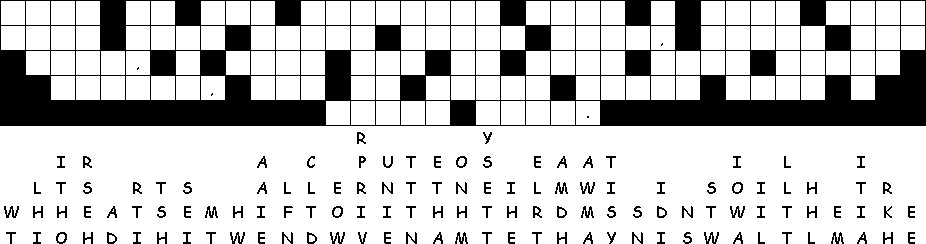

This Week: 1 Samuel 1:4-20 and 1 Samuel 2:1-10 or Daniel 12:1-3 and Psalm 16, Hebrews 10:11-14, (15-18), 19-25 Mark 13:1-8
Middle-School Pew-work
|
1 And as he went out
of the temple, one of his disciples saith unto him, Master, see
what manner of stones and what buildings are here! |
James and John and Andrew asked him
privately, |
7 And when ye shall
hear of wars and rumours of wars, be ye not troubled: for such
things must needs be; but the end shall not be yet. |
Think about the “wars and rumurs of war” that are familiar to you from current events: what do you think is God's will for such places as Iraq, Afghanistan, Sudan, Palestine...-- and in this passage is Jesus calling you to respond to, or to ignore, the suffering of the people there?
________________________________________________________________________________________________________________________________________________________________________________________________________________________________________________________________________________________________________________________________________________________________________________________________________________________________________________________________________________________________________________________________________________________________________________________________________________________________________

Created by Puzzlemaker at DiscoverySchool.com
Next Week: 2 Samuel 23:1-7 and Psalm 132:1-12, (13-18) or Daniel 7:9-10, 13-14 and Psalm 93 Revelation 1:4b-8 John 18:33-37